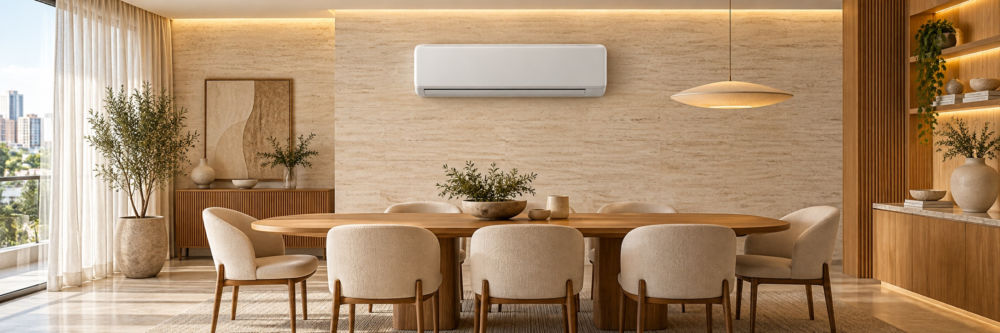
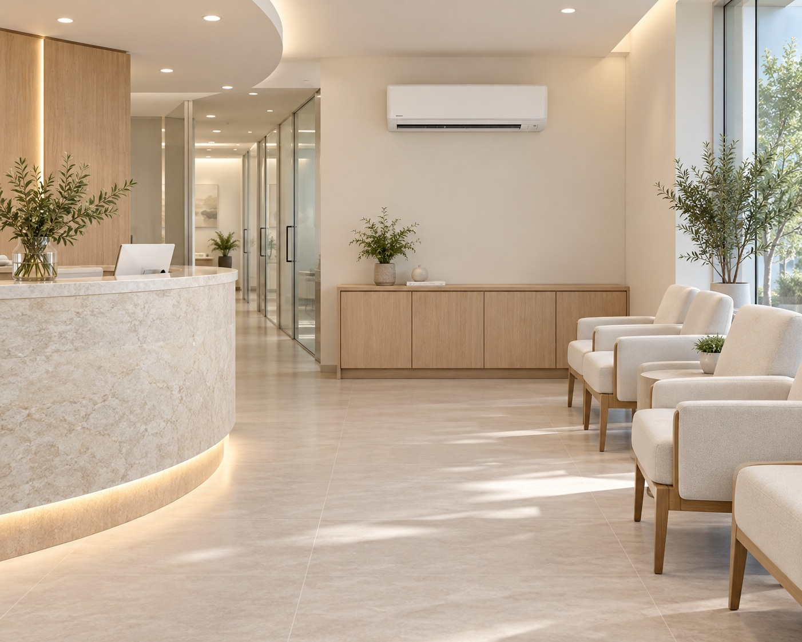

Instalação de split
Uma boa experiência começa antes de ligar o aparelho. Conte com a Total Ar para avaliar o local e cuidar da instalação do seu split, com atenção às necessidades do seu ambiente.
Quero instalar meu aparelho ↗
Serviços Total Ar
Conte o que seu ambiente precisa. Nós conversamos com você sobre o serviço e o orçamento adequado.
Uma boa experiência começa antes de ligar o aparelho. Conte com a Total Ar para avaliar o local e cuidar da instalação do seu split, com atenção às necessidades do seu ambiente.
Quero instalar meu aparelho ↗Seu conforto merece cuidado contínuo. Organize a limpeza e a manutenção preventiva dos seus aparelhos para acompanhar seu funcionamento ao longo do tempo.
Quero agendar uma manutenção ↗O aparelho parou de gelar ou apresenta funcionamento irregular? Solicite uma avaliação para entender a causa e conhecer o serviço indicado.
Preciso de uma avaliação ↗Mantenha o cuidado com seus aparelhos na rotina do negócio. Solicite uma proposta recorrente para clínicas, escritórios e estabelecimentos com equipamentos split.
Quero uma proposta para minha empresa ↗
Clínicas, escritórios e empresas
Receber bem também passa pela temperatura do ambiente. Com uma proposta de manutenção recorrente, o cuidado com seus aparelhos passa a fazer parte do planejamento da sua empresa.
Atendimento em três passos
Informe o bairro, o serviço e os detalhes do aparelho. Fotos ajudam a entender o que você precisa.
Conversamos sobre as condições do local e os detalhes necessários para apresentar a proposta.
Com o serviço alinhado, combinamos o agendamento para cuidar do seu ar-condicionado.
Perto de você
Concentramos nosso atendimento no Recreio dos Bandeirantes e na Barra da Tijuca para facilitar o agendamento e oferecer mais agilidade no cuidado com o seu ar-condicionado.
Seu próximo passo